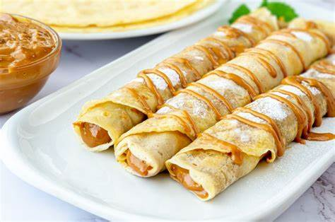

Receta de panqueques con dulce de leche
Ingredientes
- 500 cc de leche
- 250 g de harina 0000
- 1 pizca de sal
- 2 huevos
- 16 cucharadas de dulce de leche

- En un bol, colocar los huevos y la leche.
- Umar la pizca de sal y la harina de a poco, mientras se bate para que no se formen grumos. También se pueden hacer con licuadora de mano para que no queden grumos.
- Dejar reposar en la heladera media hora para que la harina se hidrate.
- Calentar un sartén (o crepera de 20 cm de diámetro ideal) con materia grasa y echar un cucharón de la preparación. Cuando coagule, voltearlo.
- Servir con abundante dulce de leche.
Volver a inicio